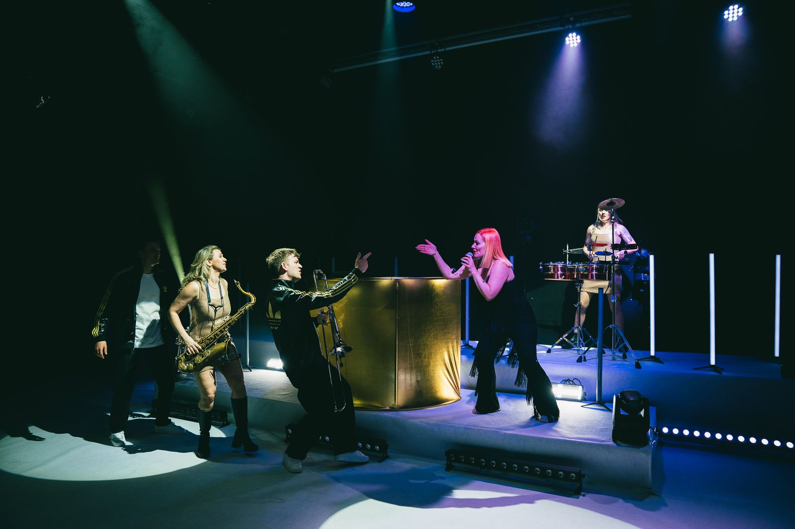
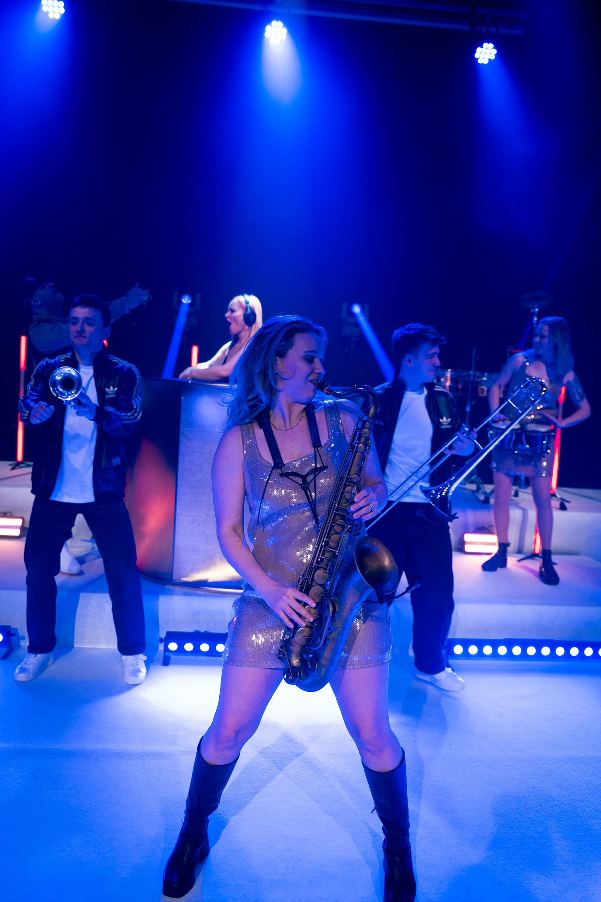
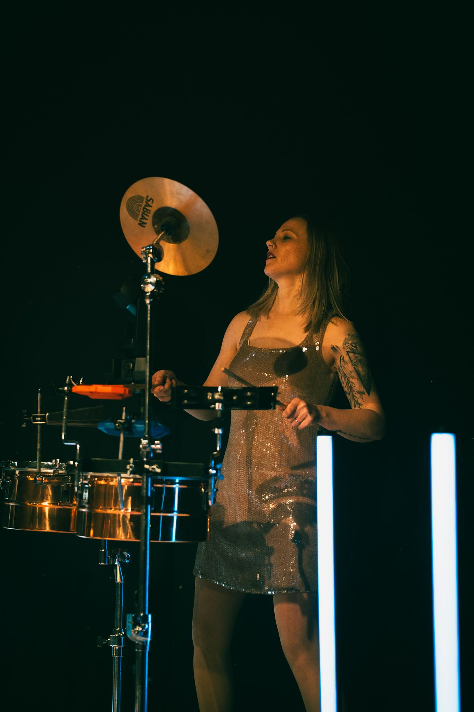
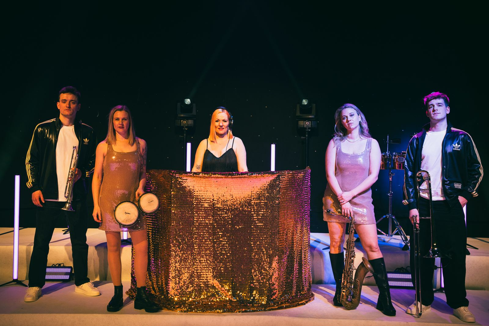

24k DJ Live is a high-end, fully customisable party experience combining the energy of a premium DJ set with the impact of live performance.
24k DJ Live is a high-end, fully customisable party experience that combines the freedom of a premium DJ set with the energy, musicianship and visual impact of a live show.
Designed for luxury weddings, destination celebrations, private parties, corporate events, brand launches and international occasions, 24k DJ Live is built around one simple idea: make the party extraordinary.
At its core is a professional DJ delivering a carefully curated soundtrack, elevated with a bespoke combination of live brass, percussion and exceptional vocalists. Choose a single live element for a subtle lift, or build the full 24k experience with saxophone, trumpet, trombone, sousaphone, percussion and multiple male and female vocalists.
Every line-up can be tailored to the event, the venue and the client. From an effortlessly stylish DJ and saxophone combination to a full-scale, brass-led spectacle with singers and percussion, 24k DJ Live can be as refined or as explosive as the occasion demands.
The result is more than a DJ set and more than a live band. It is a seamless, high-energy performance designed to keep the dancefloor moving, create moments guests remember and give an event the feeling of something truly special.
With over 10 years of experience in the live music and events industry behind the management, and musicians who have performed alongside some of the biggest names in music and on some of the world’s most prestigious stages, 24k brings professional expertise together with a fresh, contemporary approach to luxury entertainment.

Choose a single live element for a subtle lift, or build the full 24k experience with saxophone, trumpet, trombone, sousaphone, percussion and multiple male and female vocalists.



Sophisticated. Customisable. Seriously high-energy.
You choose the line-up. We bring the party.
Make it 24K
Get in Touch